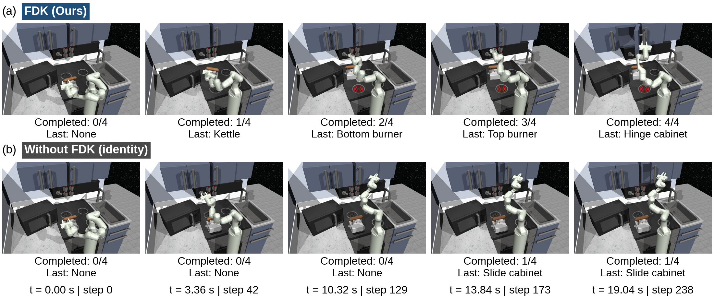

Diffusion models excel at generating diverse, multimodal trajectories and action sequences for robotic control, yet their iterative denoising process introduces latency that can constrain real-time closed-loop execution. To address this problem, we propose a Dynamic Neural Koopman (DNK) distillation framework, which distills multistep diffusion inference into a single forward pass conditioned on observations and sampled noise. Specifically, we introduce a Factorized Dynamic Koopman (FDK) layer that models the denoising process through a latent linear transition. The noisy trajectory input is lifted into a latent space, where the FDK layer parameterizes a factorized linear operator with condition-dependent eigenvalues that adapt the noisy-to-denoised transition to the current context. We evaluate DNK across robot-control benchmarks that span locomotion, state-based, and image-based manipulation, comparing against accelerated generative-policy baselines. The results demonstrate that DNK achieves competitive or improved closed-loop performance relative to accelerated generative-policy baselines, while substantially reducing inference latency relative to the strongest high-performing one-step baselines. On long-horizon manipulation tasks, DNK achieves competitive performance with substantially fewer inference parameters than the one-step policy baselines. Hardware experiments on a physical Kinova manipulator further demonstrate millisecond-scale inference and reduced task completion time.
Overall framework
DNK distills diffusion-planner behavior into a dynamic neural Koopman
student for one-step deployment while preserving trajectory diversity.
Implementation details. The DNK design uses an FDK
layer: a factorized latent Koopman transition whose eigenvalues depend
on the current context, plus a lightweight action head. Teacher
supervision transfers both performance and trajectory-structure priors
into the student.
Simulation environments
We report results on D4RL locomotion
(Walker2d-medium-expert-v2,
HalfCheetah-medium-expert-v2),
Push-T (state and image), and long-horizon
Franka / Relay-Kitchen manipulation.
Across these benchmarks, one-step DNK retains competitive closed-loop
performance relative to accelerated generative-policy baselines while
reducing inference latency to the millisecond range and using a compact
student architecture.
Simulation rollout comparison videos
Side-by-side rollouts for Teacher, Ours, Consistency Policy, KDM, and KDM-F on each benchmark.
Walker2d-medium-expert-v2
TeacherOursCPKDMKDM-F
HalfCheetah-medium-expert-v2
TeacherOursCPKDMKDM-F
Push-T (state and image)
Closed-loop Push-T rollouts with our one-step DNK student
(state-based FDK and image-based VDV variants).
Ours — Push-T state (FDK)Ours — Push-T image (VDV)
Franka / Relay-Kitchen
Long-horizon kitchen manipulation: FDK student versus an identity-transition
control (no FDK) under the same seed and protocol.

Qualitative comparison on Relay-Kitchen: FDK versus identity (no latent transition).
To reflect deployment-time latency, we provide synchronized replay where
playback speed is adjusted by measured decision latency. In this mode,
the teacher stream is slowed according to the teacher/student latency
ratio, making the real-time responsiveness gap visually explicit.
Implementation details. Replay scaling uses measured
decision-time means. Teacher playback rate is inversely proportional to
the teacher/student latency ratio, while student playback remains at
real-time speed; controls synchronize reset and start events.
Hardware: Teacher vs Ours
On the physical Kinova Gen3, we compare the diffusion teacher and our
one-step distilled policy under the same task specification, asynchronous
replanning pipeline, and low-level controller (50 trials per method).
Success requires reaching within 5 mm of the goal
within 100 s without end-effector–obstacle collision;
trials may continue past 100 s only to measure full completion time.
Experimental setup
Kinova Gen3 obstacle-aware reconfiguration task in the real-world setup.
Rollout videos
Kinova Gen3 hardware evaluation at 2× speed; paired clips support synchronized play and reset.
Diffusion Teacher (simulation).Ours (simulation).
2x SpeedDiffusion Teacher (real-world side view, 2x replay).2x SpeedOurs (real-world side view, 2x replay).
Front view (Kinova Gen3)
Second viewpoint for the same receding-horizon point-to-point obstacle-avoidance runs.
2x SpeedDiffusion Teacher (real-world front view, 2x replay).2x SpeedOurs (real-world front view, 2x replay).
Still-frame comparison (Kinova Gen3)
Representative rollout timelines. The diffusion teacher reaches the goal near t≈315 s (after the 100 s success cutoff). Ours completes at t≈85 s with faster replanning through the narrow passage.
Deployment metrics (50 trials)
Aggregates from the Kinova Gen3 hardware evaluation (same task and protocol as above).
Task success rate across 50 real-world trials (goal within 5 mm and 100 s, no collision): teacher 0.0%, Ours 100.0%.Task completion time (mean ± std, 50 real-world trials).Inference latency per control step (mean and p95 across trials).Minimum obstacle-surface clearance (mean ± std safety margin).
Success requires reaching within 5 mm of the goal within 100 s
without collision. The teacher scores 0% (mean completion
~315 s); Ours scores 100% (~85 s).
Terminal error and clearance remain comparable; mean inference latency
drops from 151.00 ms to 4.08 ms.
Implementation details. Hardware evaluation uses 50 trials per method with
80 Hz Cartesian position commands, 30-step teacher denoising, horizon 32, and 64 ranked candidates.
At most one planning request is in flight; only the first action of the top-scoring candidate updates the next command.
Simulation rollouts use the no-physics Kinova task setting; real-world clips replay at 2× speed
with synchronized play/reset for side and front views.